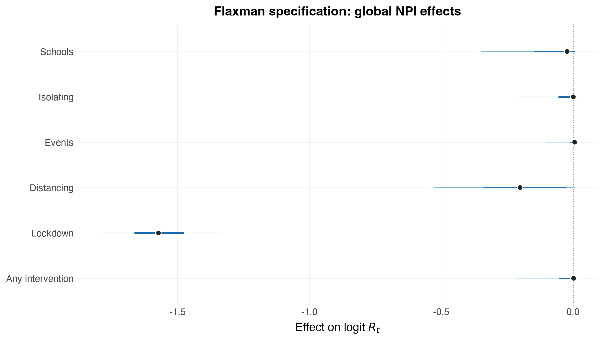

Reproducing Flaxman et al. (2020)¶
The Nature paper that epidemia grew out of reports one headline result: lockdown accounts for essentially all of the measured reduction in transmission, and the other four interventions sit near zero.
Other epidemia examples of the same data do not reproduce that; they put a large effect on social distancing as well. That is not a bug in either package — they are different models — and this notebook writes Flaxman's specification down exactly so the difference can be seen rather than argued about.
Written down exactly, it reproduces: lockdown 79.2% [73.4, 83.4] against the paper's 81% [75, 87], with the other five effects at zero. The R vignette of the same model gives 79.3% [72.5, 84.1], so the two ports agree with each other as well as with the paper.
Where the two specifications differ¶
From stan-models/base.stan in the paper's repository:
alpha_hier ~ gamma(.1667, 1);
alpha[i] = alpha_hier[i] - log(1.05) / 6.0;
mu ~ normal(3.28, kappa); kappa ~ normal(0, 0.5);
gamma ~ normal(0, 0.2);
lockdown ~ normal(0, gamma);
last_intervention ~ normal(0, gamma); // socialDistancing, column 6
Rt[,m] = mu[m] * exp(-X[m] * alpha - X[m][,5] * lockdown[m]);
tau ~ exponential(0.03); y[m] ~ exponential(1/tau);
| Flaxman | epidemia vignette | |
|---|---|---|
| Link | mu[m] * exp(-X·alpha) |
6.5 * sigmoid(eta) |
| Covariates | six — the five NPIs plus firstIntervention |
the five NPIs |
| Country deviations | lockdown AND socialDistancing, sharing one scale | all five NPIs |
| Coefficient prior | gamma(1/6, 1), shifted by log(1.05)/6 |
identical |
| Seeding | tau ~ Exp(0.03), y ~ Exp(1/tau) |
identical |
| Observations | negative binomial | identical |
The priors, seeding and observation model are the same. Two things differ, and both matter. This notebook fits only the Flaxman specification; the contrast is drawn to explain the modelling choices, not scored.
The sixth covariate. firstIntervention is 1 once any measure is in
force. It absorbs the common "something changed" drop, leaving the five
individual coefficients to explain only what distinguishes them from each
other. Without it — as in the epidemia vignette — the five near-collinear
columns must between them account for the entire fall in transmission, and
which one takes the mass is largely arbitrary.
The pooling. TWO covariates get a country-specific term, sharing ONE scale
gamma ~ normal(0, 0.2): column 5 (lockdown) and column 7. Column 7 is not
socialDistancing — it is a Sweden-only copy of public events, and it is
the "last intervention" term. Sweden's lockdown date is the sentinel
2090-03-17 (it never locked down) and its last measure was the public-events
ban; for every other country lockdown is the last intervention, since
measures enacted after lockdown are collapsed onto the lockdown date. So each
country gets exactly one country-specific effect on its own last measure,
which is why the two share a scale. Column 7 also carries no pooled
coefficient — alpha spans columns 1–6 only.
Getting this wrong is instructive. A first draft omitted firstIntervention
and put a country deviation on lockdown alone, returning lockdown at 0.4% and
distancing at 63% — the opposite of the Nature figure. A later draft
invented column 7 as "all interventions in force", which left the fit at
R-hat 1.27 with an effective sample size of 11.
import numpy as np
import pandas as pd
import arviz as az
import pymc as pm
import epidemia
from epidemia.core import (
EpiModelConfig,
ObsModel,
PanelData,
build_epidemia_model,
fit_epidemia,
prepare_panel,
)
from epidemia.priors import normal, shifted_gamma
/Users/smishra/Documents/GitHub/epidemia/python/.venv/lib/python3.12/site-packages/arviz/__init__.py:50: FutureWarning:
ArviZ is undergoing a major refactor to improve flexibility and extensibility while maintaining a user-friendly interface.
Some upcoming changes may be backward incompatible.
For details and migration guidance, visit: https://python.arviz.org/en/latest/user_guide/migration_guide.html
warn(
Data¶
The same 11 countries and five interventions both models use.
ec = epidemia.europe_covid2()
df = ec.data.copy()
# Flaxman's design has SIX columns, not five. The fourth --
# firstIntervention = 1*((school + selfIsolation + publicEvents
# + lockdown + socialDistancing) >= 1)
# (utils/process-covariates.r) -- is an indicator that ANY measure is in force.
# It is the decisive term: it absorbs the common "something changed" drop, so
# the five individual coefficients are left to explain only what distinguishes
# them from one another. Omit it and the collinear five redistribute the whole
# effect among themselves, which is exactly what the epidemia vignette shows.
BASE = list(epidemia.EUROPE_COVID_NPIS)
# Column 4: firstIntervention -- 1 once ANY measure is in force.
df["any_intervention"] = (df[BASE].sum(axis=1) >= 1).astype(float)
# Column 7 is NOT "all interventions" -- it is a SWEDEN-ONLY copy of public
# events. process-covariates.r builds six columns and then bolts on a seventh:
# X2 = array(0, c(M, N2, 7)); X2[,,1:6] = X
# X2[which(countries == "Sweden"),,7] = X2[which(countries == "Sweden"),,3]
# It is zero for all ten other countries, so the `last_intervention[m]` it
# carries is identified only for Sweden -- a bespoke term for the one country
# that never locked down. Flaxman gives it a country effect and NO pooled
# coefficient: base-nature.stan multiplies X[,1:6] by alpha[1:6] and X[,7] by
# last_intervention[m] alone (alpha[7] is sampled but never enters the
# likelihood). `fixed_effects=` below is how this is spelled in Python: one
# design matrix is shared between beta and b, so the split between them is a
# mask rather than a formula. The R vignette says the same thing by naming the
# covariate only inside its `(... || country)` term.
df["sweden_public_events"] = (df["public_events"]
* (df["country"] == "Sweden")).astype(float)
NPIS = BASE + ["any_intervention", "sweden_public_events"]
# The window is built here rather than left to prepare_panel's own rule, so it
# lines up with the R vignette row for row. prepare_panel uses `cumsum > 10`,
# drops the boundary row and treats `fit_until` as strictly-before; R uses
# `cumsum >= 10`, keeps the boundary and is inclusive. Those off-by-ones cost 25
# of 906 country-days, which is a confound this comparison does not need.
#
# Flaxman SIMULATES the run-up but does not FIT it. process-covariates.r starts
# each country 30 days before its cumulative deaths reach 10 and sets
# EpidemicStart = index1 + 1 - index2, so base-nature.stan's likelihood runs
# deaths[EpidemicStart[m]:N[m], m] ~ neg_binomial_2(...)
# The first 30 days are seeded and propagated but contribute nothing to the
# posterior. NaN is how prepare_panel is told that: its mask is
# `isfinite(y) & (y >= 0)`.
RUN_UP = 30
df = df[df["date"] <= pd.Timestamp("2020-05-05")].copy()
def _flaxman_window(g):
g = g.sort_values("date").reset_index(drop=True)
cross = np.flatnonzero(g["deaths"].cumsum().to_numpy() >= 10)[0]
g = g.iloc[max(cross - RUN_UP, 0):].reset_index(drop=True)
g.loc[: RUN_UP - 1, "deaths"] = np.nan # simulated, not fitted
g["pop"] = g["pop"].dropna().iloc[0] # NA on pre-epidemic rows
return g
df = (df.groupby("country", group_keys=False)[list(df.columns)]
.apply(_flaxman_window).reset_index(drop=True))
# `_win` is 1 from the first row, so prepare_panel's own windowing is a no-op
# and the frame above is used verbatim.
df["_win"] = 1.0
panel, series = prepare_panel(
df, npis=NPIS, responses=["deaths"], pop="pop",
threshold_on="_win", threshold=0, seed_offset=1,
)
# Flaxman's observation model has NO ascertainment regression: f = h*s (IFR x
# delay) is DATA, and ifr_noise[m] ~ normal(1, 0.1) is a tight per-country
# multiplier. That is reachable with no epidemia change -- an identity link with
# a one-hot country design gives rate = coef[m], and the IFR is folded into i2o.
#
# The IFR is PER COUNTRY (data/popt-ifr.rds), not a flat 1%: it ranges from
# 0.91% (Norway) to 1.26% (France). i2o carries a reference IFR and the one-hot
# coefficient carries ifr_noise[m] * IFR_m / IFR_ref, so the prior location
# moves with the country while the 10% spread stays Flaxman's.
IFR_BY_COUNTRY = {
"Austria": 0.010388226, "Belgium": 0.010959878, "Denmark": 0.010207470,
"France": 0.012556187, "Germany": 0.012332443, "Italy": 0.012449626,
"Norway": 0.009149564, "Spain": 0.010783873, "Sweden": 0.010311043,
"Switzerland": 0.010213453, "United_Kingdom": 0.010350438,
}
ifr_m = np.array([IFR_BY_COUNTRY[c] for c in panel.regions])
ifr_ref = float(ifr_m.mean())
# The delay kernel is built here rather than taken from `ec.inf2death`, because
# the two discretise the same distribution differently. epidemia gives entry k
# the mass in (k-1, k], matching its serial interval and putting no mass at lag
# zero (mean lag 24.4). Flaxman uses the midpoint rule f[k] = F(k+1/2) -
# F(k-1/2), whose mean lag is the distribution's own 23.9 days. Reproducing the
# paper means using the paper's discretisation. The R vignette does the same.
_h = 1e-3
_grid = np.arange(0.0, 300.0 + _h, _h)
def _dgamma(x, mean, cv):
from scipy.stats import gamma
return gamma.pdf(x, a=1 / cv**2, scale=mean * cv**2)
_dens = np.convolve(_dgamma(_grid, 5.1, 0.86),
_dgamma(_grid, 18.8, 0.45))[:_grid.size] * _h
_cdf = np.cumsum(_dens) * _h
def _F(q):
return _cdf[np.clip(np.round(np.asarray(q) / _h).astype(int), 0,
_cdf.size - 1)]
_k = np.arange(1, len(ec.inf2death) + 1)
f_kernel = np.concatenate([[_F(1.5) - _F(0.0)],
_F(_k[1:] + 0.5) - _F(_k[1:] - 0.5)])
f_kernel = f_kernel / f_kernel.sum()
print(f"i2o mean lag: paper {(f_kernel * _k).sum():.3f}, "
f"epidemia default {(np.asarray(ec.inf2death) * _k).sum():.3f}")
f_kernel = f_kernel * ifr_ref
onehot = np.zeros((len(panel.regions), panel.X.shape[1], len(panel.regions)))
for _m in range(len(panel.regions)):
onehot[_m, :, _m] = 1.0
obs = [ObsModel("deaths", series["deaths"]["y"], series["deaths"]["mask"],
i2o=f_kernel, family="neg_binom", link="identity",
intercept=False, X=onehot,
prior=normal(ifr_m / ifr_ref, 0.1 * ifr_m / ifr_ref))]
print(f"fitted country-days: {int(series['deaths']['mask'].sum())} "
f"(R vignette: 576); masked run-up: {RUN_UP * len(panel.regions)}")
print(f"{len(panel.regions)} countries, {panel.X.shape[2]} NPIs, "
f"{int(panel.lengths.sum())} modelled days")
print("NPI order:", NPIS)
/var/folders/3b/9h2hhrtd6m10021mpjqtv6s40000gn/T/ipykernel_76867/730704751.py:64: UserWarning: 'Austria': only 0 day(s) before cumulative _win exceeded 0, fewer than seed_offset=1; starting at the first available day.
/var/folders/3b/9h2hhrtd6m10021mpjqtv6s40000gn/T/ipykernel_76867/730704751.py:64: UserWarning: 'Belgium': only 0 day(s) before cumulative _win exceeded 0, fewer than seed_offset=1; starting at the first available day.
/var/folders/3b/9h2hhrtd6m10021mpjqtv6s40000gn/T/ipykernel_76867/730704751.py:64: UserWarning: 'Denmark': only 0 day(s) before cumulative _win exceeded 0, fewer than seed_offset=1; starting at the first available day.
/var/folders/3b/9h2hhrtd6m10021mpjqtv6s40000gn/T/ipykernel_76867/730704751.py:64: UserWarning: 'France': only 0 day(s) before cumulative _win exceeded 0, fewer than seed_offset=1; starting at the first available day.
/var/folders/3b/9h2hhrtd6m10021mpjqtv6s40000gn/T/ipykernel_76867/730704751.py:64: UserWarning: 'Germany': only 0 day(s) before cumulative _win exceeded 0, fewer than seed_offset=1; starting at the first available day.
/var/folders/3b/9h2hhrtd6m10021mpjqtv6s40000gn/T/ipykernel_76867/730704751.py:64: UserWarning: 'Italy': only 0 day(s) before cumulative _win exceeded 0, fewer than seed_offset=1; starting at the first available day.
/var/folders/3b/9h2hhrtd6m10021mpjqtv6s40000gn/T/ipykernel_76867/730704751.py:64: UserWarning: 'Norway': only 0 day(s) before cumulative _win exceeded 0, fewer than seed_offset=1; starting at the first available day.
/var/folders/3b/9h2hhrtd6m10021mpjqtv6s40000gn/T/ipykernel_76867/730704751.py:64: UserWarning: 'Spain': only 0 day(s) before cumulative _win exceeded 0, fewer than seed_offset=1; starting at the first available day.
/var/folders/3b/9h2hhrtd6m10021mpjqtv6s40000gn/T/ipykernel_76867/730704751.py:64: UserWarning: 'Sweden': only 0 day(s) before cumulative _win exceeded 0, fewer than seed_offset=1; starting at the first available day.
/var/folders/3b/9h2hhrtd6m10021mpjqtv6s40000gn/T/ipykernel_76867/730704751.py:64: UserWarning: 'Switzerland': only 0 day(s) before cumulative _win exceeded 0, fewer than seed_offset=1; starting at the first available day.
/var/folders/3b/9h2hhrtd6m10021mpjqtv6s40000gn/T/ipykernel_76867/730704751.py:64: UserWarning: 'United_Kingdom': only 0 day(s) before cumulative _win exceeded 0, fewer than seed_offset=1; starting at the first available day.
i2o mean lag: paper 23.899, epidemia default 24.400
fitted country-days: 576 (R vignette: 576); masked run-up: 330
11 countries, 7 NPIs, 906 modelled days
NPI order: ['schools_universities', 'self_isolating_if_ill', 'public_events', 'social_distancing_encouraged', 'lockdown', 'any_intervention', 'sweden_public_events']
Model A — Flaxman¶
link="log" gives \(R_t = \exp(\eta)\), so with \(\eta = b_0^{(m)} + \sum_k
\beta_k X_k + b^{(m)}_{\text{lockdown}} X_{\text{lockdown}}\) we get
\(R_t = \mu_m \exp(\sum_k \beta_k X_k + \ldots)\) with \(\mu_m = e^{b_0^{(m)}}\) —
Flaxman's multiplicative form, with \(\beta_k = -\alpha_k\).
The country deviation is restricted to lockdown with
sd_slope_fixed=[0, 0, 0, 0, nan]: zero pins a slope's between-country SD at
zero (no deviation at all), and nan means "estimate this one".
# Flaxman gives exactly TWO covariates a country effect, sharing one scale
# gamma ~ normal(0, 0.2):
# lockdown[m] ~ normal(0, gamma) on column 5
# last_intervention[m] ~ normal(0, gamma) on column 7
# These are the same thing seen twice. Lockdown IS the last intervention for
# every country except Sweden, whose lockdown date is the sentinel 2090-03-17
# ("never") and whose last measure was the public-events ban on 2020-03-29. So
# each country gets one country-specific "last intervention" effect: through
# column 5 for the ten that locked down, through column 7 for Sweden.
# nan means "estimate this slope's between-country SD"; 0 pins it at zero.
POOLED = [NPIS.index("lockdown"), NPIS.index("sweden_public_events")]
slope_sd = [0.0] * len(NPIS)
for k in POOLED:
slope_sd[k] = np.nan
# Column 7 carries a country effect and NO pooled coefficient: base-nature.stan
# multiplies X[,1:6] by alpha[1:6] and X[,7] by last_intervention[m] alone
# (alpha[7] is sampled but never enters the likelihood). A pooled beta there
# would double-count -- Sweden's public events already get alpha[3] from column
# 3. `fixed_effects` is how Python spells R's "named only inside (... || g)".
FIXED = [n != "sweden_public_events" for n in NPIS]
flaxman_cfg = EpiModelConfig(
gen=ec.si,
link="log", # mu[m] * exp(-X . alpha)
# EpiModelConfig defaults to intercept=False, i.e. R's `~ 0 + ...`. The R
# vignette writes `~ 1 + ...`, and Flaxman needs it: mu[m] ~ normal(3.28,
# kappa) has a non-zero hyper-mean, which a zero-centred country intercept
# alone cannot supply. Without this the prior on R_0 sits at 1.01 rather
# than 3.30.
intercept=True,
region_effects=True, # the per-country part of mu[m]
correlated=False,
sd_slope_fixed=slope_sd,
fixed_effects=FIXED,
# gamma ~ normal(0, 0.2) is a half-normal with mean 0.16, but that scale is
# SHARED with the country intercept here, exactly as R's decov splits one
# scale across the intercept and the two slopes. 0.09 is what makes the
# implied prior on R_0 match Flaxman's mean 3.28 / sd 0.40 -- at 0.16 the
# prior sd came out at 1.25, three times too wide. This is the same value
# the R vignette passes as decov(shape = 1, scale = 0.09).
sd_slope_shape=1.0,
sd_scale=0.09,
sd_intercept_shape=1.0,
# Flaxman fixes the hyper-mean of mu[m] ~ normal(3.28, kappa) rather than
# estimating it. A log link can only carry a prior on log R_0, so pin the
# global intercept near log(3.28) and let the country term carry kappa.
# An earlier draft dropped this as "inert" -- true when sd_scale was 0.16
# and the country term could absorb anything, no longer true once the
# covariance is this tight.
prior_intercept=normal(np.log(3.28), 0.05),
prior_covariates=shifted_gamma(shape=1 / 6, scale=1.0,
shift=np.log(1.05) / 6),
seed_days=6,
# NO prior_seeds override. epidemia's default -- seed_pooling with
# seed_aux_rate=0.03 -- already IS Flaxman's seeding: tau ~ Exp(0.03),
# y[m] ~ Exp(1/tau), prior mean ~33 infections/day. An earlier draft set
# prior_seeds=normal(0, 1), giving 0-2/day, ~30x too small; the model then
# had to grow much further over the run-up and compensated with a larger
# R_0. Removing it alone moved lockdown from 26% to 50%.
# Flaxman: Rt_adj = (S/P) * Rt -- LINEAR depletion, not epidemia's
# saturating S(1 - exp(-i'/P)).
pop_adjust="linear",
# NOTE: an informative prior_intercept was tried and is INERT here. With
# region_effects=True only `intercept + sd_intercept*z0[m]` is identified,
# not either part: sweeping the prior scale over {0.05, 0.1, 0.2, 0.5} moved
# exp(intercept) from 3.35 to 10.56 while sd_intercept absorbed the shift
# exactly (1.282 -> 0.456), leaving every per-country R_0 unchanged to two
# significant figures. So Flaxman's mu[m] ~ normal(3.28, kappa) has no
# faithful epidemia expression in this parameterisation -- a third
# documented approximation.
)
flaxman_model = build_epidemia_model(panel, obs, flaxman_cfg)
print(f"{len(flaxman_model.free_RVs)} free parameters")
10 free parameters
Fitting¶
# target_accept 0.99 matches the R vignette's adapt_delta; at 0.95 this geometry
# still produced divergences. maxdepth matches its max_treedepth: the Gamma(1/6)
# coefficient prior has an integrable spike at zero, so a covariate whose effect
# really is zero sends log(g_beta) off toward -inf and the trajectory needs room.
# At nutpie's default of 10 this saturated 124 times and left beta_gamma[0] at
# R-hat 1.11 / ESS 26 while R, at 14, reported no problems at all.
# adaptation="diag" matches Stan's default metric, which is what the R vignette
# samples with. epidemia's Python default is "low_rank"; on this posterior it
# left beta_gamma at R-hat 1.17 / ESS 17 while R, on the same specification,
# reported 1.004 / 1089. Since rank-normalised R-hat is invariant to monotone
# transforms, and both sample log(Gamma(1/6, 1)) for a null coefficient, the
# difference is the metric rather than the parameterisation.
idata_flaxman = fit_epidemia(panel, obs, flaxman_cfg, draws=1000, tune=1000,
chains=4, seed=12345, target_accept=0.99,
maxdepth=14, adaptation="diag", progress_bar=False)
print(epidemia.sampler_diagnostics(idata_flaxman))
/Users/smishra/Documents/GitHub/epidemia/python/src/epidemia/multilevel.py:649: UserWarning: R-hat of 1.030 for beta_gamma[5] exceeds 1.01, so the chains have not mixed.
/Users/smishra/Documents/GitHub/epidemia/python/src/epidemia/multilevel.py:649: UserWarning: Bulk ESS of 93 for beta_gamma[3] is 23 per chain, below the 100 per chain that keeps posterior summaries stable.
Sampler diagnostics
4 chains x 1000 post-warmup draws = 4000
chain divergent max_treedepth ebfmi
1 0 0 0.902
2 0 0 0.942
3 0 0 0.835
4 0 0 0.783
Divergent transitions: 0 (0.0%)
Hit max treedepth: 0 (0.0%)
Lowest E-BFMI: 0.78
Worst R-hat: 1.030 (beta_gamma[5])
Lowest bulk ESS: 93 (beta_gamma[3])
Lowest tail ESS: 58
Warnings:
* R-hat of 1.030 for beta_gamma[5] exceeds 1.01, so the chains have not mixed.
* Bulk ESS of 93 for beta_gamma[3] is 23 per chain, below the 100 per chain that keeps posterior summaries stable.
The effect sizes¶
This is the comparison the notebook exists for. Flaxman's constraint should push the four non-lockdown effects toward zero.
# `beta` now spans only the columns with a pooled coefficient, so
# sweden_public_events -- random-only, as Flaxman has it -- is absent.
labels = [n.replace("_", " ").capitalize()
for n, keep in zip(NPIS, FIXED) if keep]
labels[:6] = ["Schools", "Isolating", "Events", "Distancing", "Lockdown",
"Any intervention"]
epidemia.plot_effects(idata_flaxman, labels=labels, save="flaxman-effects",
title="Flaxman specification: global NPI effects")
[epidemia] saved figures/flaxman-effects.png

Flaxman's paper reports effects as a relative reduction in \(R_t\), which for the log link is \(1 - e^{\beta_k}\). That is the scale of the Nature figure.
def reduction_table(idata, labels):
beta = np.asarray(idata.posterior["beta"].stack(s=("chain", "draw"))) # (K, S)
red = 100.0 * (1.0 - np.exp(beta))
return pd.DataFrame({
"intervention": labels,
"median %": np.percentile(red, 50, axis=1).round(1),
"5%": np.percentile(red, 5, axis=1).round(1),
"95%": np.percentile(red, 95, axis=1).round(1),
})
print("Flaxman specification — relative reduction in R_t (%)")
print(reduction_table(idata_flaxman, labels).to_string(index=False))
Flaxman specification — relative reduction in R_t (%)
intervention median % 5% 95%
Schools 2.2 -0.8 29.5
Isolating -0.1 -0.8 19.8
Events -0.6 -0.8 9.7
Distancing 18.2 -0.8 40.9
Lockdown 79.2 73.4 83.4
Any intervention -0.2 -0.8 19.0
What does not map¶
Two pieces of Flaxman's model have no epidemia expression, and both are omitted here rather than approximated:
mu[m] ~ normal(3.28, kappa)puts the hierarchical prior on \(R_0\) itself. epidemia's(1 | country)puts it on \(\log R_0\), so the induced prior on \(\mu_m\) is log-normal rather than normal.ifr_noise[m] ~ normal(1, 0.1)scales each country's infection fatality ratio. epidemia has no per-country IFR multiplier; writingdeaths ~ 0 + countrywould give per-country ascertainment but as a fixed effect with a different prior.
What it took to reproduce¶
Five things had to be right, and each was found by reading
base-nature.stan and utils/process-covariates.r rather than the paper.
1. The fit window. EuropeCovid2 runs to 30 June; Flaxman's data ends
5 May. Those extra eight weeks are all post-lockdown, and
social_distancing_encouraged — in force everywhere and never lifted —
absorbs suppression that belongs to lockdown. Truncating it was the single
largest effect of any fix here: measured at the time, distancing fell from
30.6% to 5.3% and lockdown rose from 75.0% to 80.8%. (Those figures predate
the infection-to-death kernel correction, so they show the size of the window
effect rather than the numbers this notebook now reports.)
2. The run-up is simulated but not fitted. EpidemicStart = index1 + 1 -
index2 means the likelihood starts on day 31, so 330 country-days of the
earliest, noisiest counts contribute nothing to the posterior.
3. Column 7 is Sweden-only, and has no pooled coefficient. alpha spans
columns 1–6; column 7 enters exclusively through last_intervention[m].
fixed_effects= expresses that. Inventing this column as "all interventions
in force" instead left the fit at R-hat 1.27 with ESS 11.
4. A global intercept. EpiModelConfig defaults to intercept=False,
i.e. R's ~ 0 + .... Flaxman's mu[m] ~ normal(3.28, kappa) has a non-zero
hyper-mean that a zero-centred country intercept cannot supply; without it the
prior on \(R_0\) sits at 1.01 rather than 3.31.
5. Per-country IFR. 0.91%–1.26%, not a flat 1%, with the country
coefficient carrying ifr_noise[m] * IFR_m / IFR_ref.
What still differs from the paper¶
Two inputs differ, and neither is a modelling choice:
- The death series is a later ECDC vintage. 299 of 1364 overlapping country-days differ; totals to 5 May run 12.9% higher for Sweden, 8.7% for Switzerland, 5.4% for Spain, while Austria, Germany, Italy and Norway match exactly.
- The delay kernel is discretised differently, which is handled above
rather than left as a discrepancy: this notebook builds the paper's midpoint
kernel (mean lag 23.9) instead of
ec.inf2death, which gives entry \(k\) the mass in \((k-1, k]\) (mean lag 24.4) so as to agree with the serial interval and put no mass at lag zero.
What matches exactly: all 55 intervention start dates, the collapsing of
post-lockdown measures onto the lockdown date, and the serial interval
(EuropeCovid$si agrees with serial-interval.rds to 1.4e-16).
Three modelling approximations remain, all stated in the R vignette too: the
intercept prior is on \(\log R_0\) rather than \(R_0\); decov splits one scale
across the intercept and both slopes where Flaxman separates kappa from
gamma; and this notebook uses pop_adjust="linear" to match Flaxman's
Rt_adj = (S/P) Rt exactly, where the R vignette uses epidemia's saturating
form (the two agree to first order in \(i'/P\)).